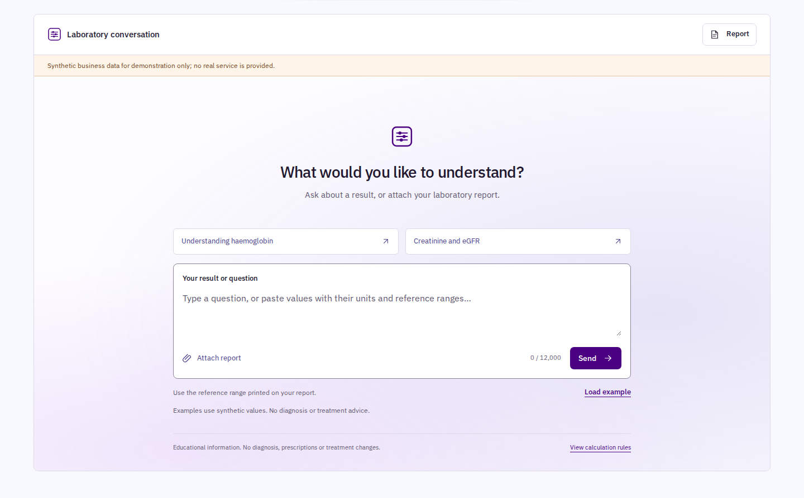
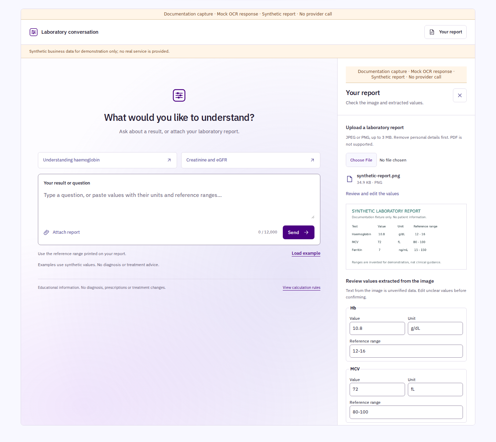

ResultScope Laboratory Assistant
Understand your laboratory results.
Start a conversation. Keep your report close.
- Review what was read.
- Keep the reference range in view.
- Understand the limits.


Local product prototype. Educational information, not a diagnosis.